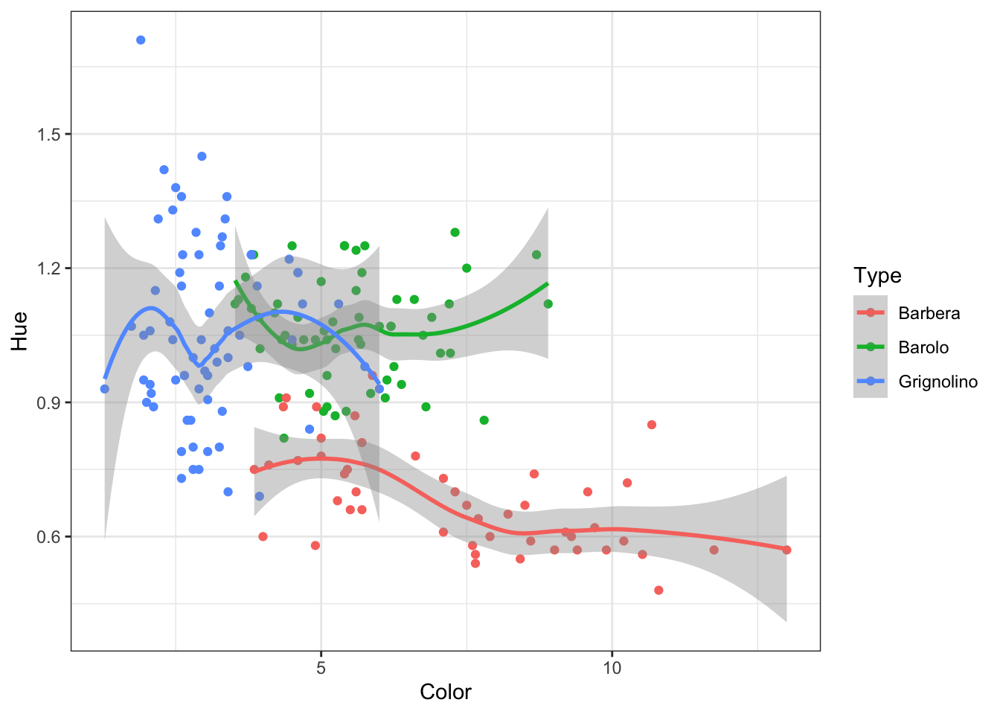
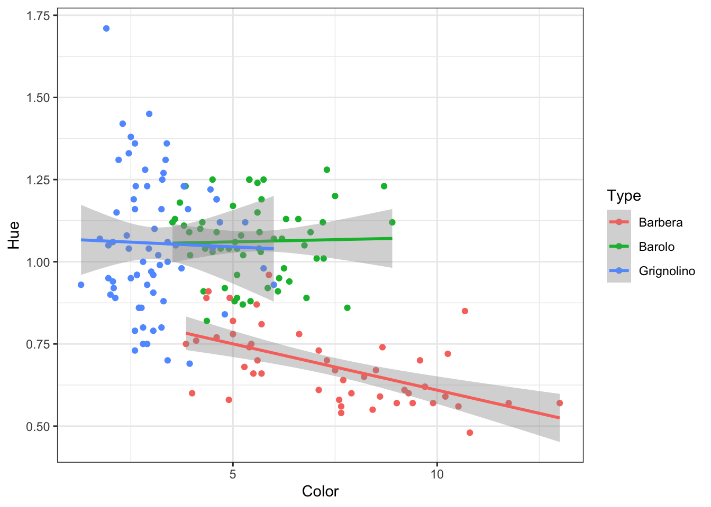
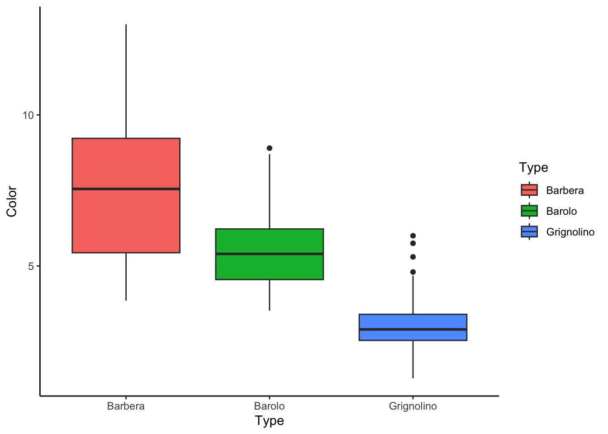
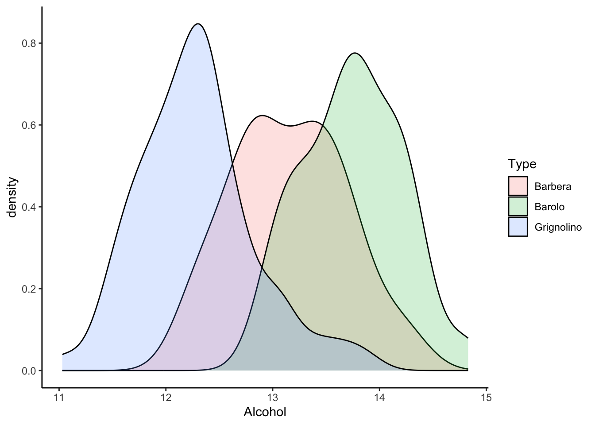

path to your data should exist if you have problem to load data look in which directory are you in your computer by running getwd()
After loading red text is just message about data no error
wine_data <-read_tsv("data/wine_data_set.tsv")
Rows: 178 Columns: 14
── Column specification ────────────────────────────────────────────────────────
Delimiter: "\t"
chr (1): Type
dbl (13): Alcohol, Malic, Ash, Alcalinity, Magnesium, Phenols, Flavanoids, N...
ℹ Use `spec()` to retrieve the full column specification for this data.
ℹ Specify the column types or set `show_col_types = FALSE` to quiet this message.
We’ll be using data from the coronavirus package for today’s assignment. The coronavirus dataset has the following columns:
date = The date of the summary
province = The province or state, when applicable
country = The country or region name
lat = Latitude point
long = Longitude point
type = the type of case (i.e., confirmed, death)
cases = the number of daily cases (corresponding to the case type)
You need to install and load a package to get the data, so make sure you pay attention to the set up steps and run every chunk.
Set Up
Install the package with the data
# install.packages("coronavirus")
Load the library. Libraries are collections of functions (and sometimes data like here) that are add ons to base R.
library(coronavirus)
We’ll be using data from the coronavirus package for today’s assignment. The coronavirus dataset has the following columns:
date = The date of the summary
province = The province or state, when applicable
country = The country or region name
lat = Latitude point
long = Longitude point
type = the type of case (i.e., confirmed, death)
cases = the number of daily cases (corresponding to the case type)
You need to install and load a package to get the data, so make sure you pay attention to the set up steps and run every chunk.
Load the data. The data() loads data from packages into R.
# use the data() function to load the data in the packagedata("coronavirus")
Look at the data. Run the chunk and it will give you a nicely formatted preview of the data.
coronavirus %>%head()
date province country lat long type cases uid iso2 iso3
1 2020-01-22 Alberta Canada 53.9333 -116.5765 confirmed 0 12401 CA CAN
2 2020-01-23 Alberta Canada 53.9333 -116.5765 confirmed 0 12401 CA CAN
3 2020-01-24 Alberta Canada 53.9333 -116.5765 confirmed 0 12401 CA CAN
4 2020-01-25 Alberta Canada 53.9333 -116.5765 confirmed 0 12401 CA CAN
5 2020-01-26 Alberta Canada 53.9333 -116.5765 confirmed 0 12401 CA CAN
6 2020-01-27 Alberta Canada 53.9333 -116.5765 confirmed 0 12401 CA CAN
code3 combined_key population continent_name continent_code
1 124 Alberta, Canada 4413146 North America NA
2 124 Alberta, Canada 4413146 North America NA
3 124 Alberta, Canada 4413146 North America NA
4 124 Alberta, Canada 4413146 North America NA
5 124 Alberta, Canada 4413146 North America NA
6 124 Alberta, Canada 4413146 North America NA
Combining dplyr Functions
In this second section, the questions get a little harder. You’ll need to give more than one argument to the dplyr functions and chain multiple functions together. Again, use the code chunk below each question to give your answer.
Find the minimum and maximum numbers of cases.
coronavirus %>%summarize(min(cases), max(cases))
min(cases) max(cases)
1 -6298082 1354505
Use arrange() to rearrange the coronavirus table so the latest date is first. (By latest I mean the closest data to today, for example April 1 2020-04-01 is closer to today than January first 2020-01-01).
coronavirus %>%arrange(desc(date)) %>%head()
date province country lat long
1 2023-03-09 Alberta Canada 53.9333 -116.5765
2 2023-03-09 Anguilla United Kingdom 18.2206 -63.0686
3 2023-03-09 Anhui China 31.8257 117.2264
4 2023-03-09 Aruba Netherlands 12.5211 -69.9683
5 2023-03-09 Australian Capital Territory Australia -35.4735 149.0124
6 2023-03-09 Beijing China 40.1824 116.4142
type cases uid iso2 iso3 code3 combined_key
1 confirmed 0 12401 CA CAN 124 Alberta, Canada
2 confirmed 0 660 AI AIA 660 Anguilla, United Kingdom
3 confirmed 0 15601 CN CHN 156 Anhui, China
4 confirmed 0 533 AW ABW 533 Aruba, Netherlands
5 confirmed 355 3601 AU AUS 36 Australian Capital Territory, Australia
6 confirmed 0 15602 CN CHN 156 Beijing, China
population continent_name continent_code
1 4413146 North America NA
2 15002 North America NA
3 63240000 Asia AS
4 106766 North America NA
5 428100 Oceania OC
6 21540000 Asia AS
# A tibble: 6 × 2
country total_cases
<chr> <dbl>
1 US 104926538
2 India 76196265
3 Brazil 55546557
4 Germany 42077255
5 France 40448005
6 Japan 34245886
date province country lat long type cases uid iso2 iso3
1 2020-01-22 Alberta Canada 53.9333 -116.5765 confirmed 0 12401 CA CAN
2 2020-01-23 Alberta Canada 53.9333 -116.5765 confirmed 0 12401 CA CAN
3 2020-01-24 Alberta Canada 53.9333 -116.5765 confirmed 0 12401 CA CAN
4 2020-01-25 Alberta Canada 53.9333 -116.5765 confirmed 0 12401 CA CAN
5 2020-01-26 Alberta Canada 53.9333 -116.5765 confirmed 0 12401 CA CAN
6 2020-01-27 Alberta Canada 53.9333 -116.5765 confirmed 0 12401 CA CAN
code3 combined_key population continent_name continent_code great100
1 124 Alberta, Canada 4413146 North America NA FALSE
2 124 Alberta, Canada 4413146 North America NA FALSE
3 124 Alberta, Canada 4413146 North America NA FALSE
4 124 Alberta, Canada 4413146 North America NA FALSE
5 124 Alberta, Canada 4413146 North America NA FALSE
6 124 Alberta, Canada 4413146 North America NA FALSE
How many countries have average daily case totals greater than 100?
wine_data %>%ggplot(aes(x=Color, y=Hue, color = Type)) +geom_point()+geom_smooth() +theme_bw()
`geom_smooth()` using method = 'loess' and formula = 'y ~ x'

make fit line linear
wine_data %>%ggplot(aes(x=Color, y=Hue, color = Type)) +geom_point()+geom_smooth(method ='lm') +theme_bw()
`geom_smooth()` using formula = 'y ~ x'

make boxplot of color split and color by “Type”
wine_data %>%ggplot(aes(x=Type, y=Color, fill = Type)) +geom_boxplot()+theme_classic()

make density plot of Alcohol content and split by “Type” to make it more informative make fill transparent with smaller alpha
wine_data %>%ggplot(aes(x=Alcohol, fill = Type)) +geom_density(alpha=0.2)+theme_classic()

another option to make density plot more readeble is to facet plot by Type, so wi add facet
wine_data %>%ggplot(aes(x=Alcohol, fill = Type, color=Type)) +geom_density(alpha=0.2) +facet_wrap(~Type) +theme_classic()
Statistics
T-test
to test difference in means we use t test, since with t.test we can only test two groups we will silter one group out in wine example set H0: In stat test we always assume there is no difference
wine_data %>%filter(Type !="Barolo") %>%t.test(Alcohol ~ Type, data = .) %>%tidy()
# conclusion Barolo-Barbera and Grignolino-Barbera are significantly different from each other # but groups there is no sig. difference beteewn Grignolino-Barolo btw we could have this idea from boxplot of # all Type ploted together
Linear Model (LM)
make a linear model of two parameter from wine data set again H0: there is no correlation Alcohol and Color, these two measurement are independent